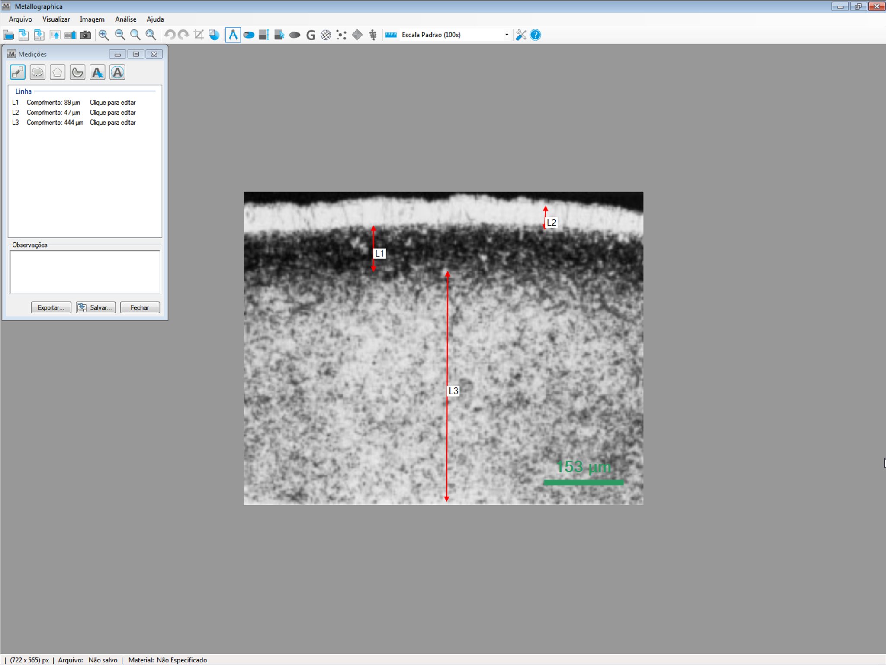
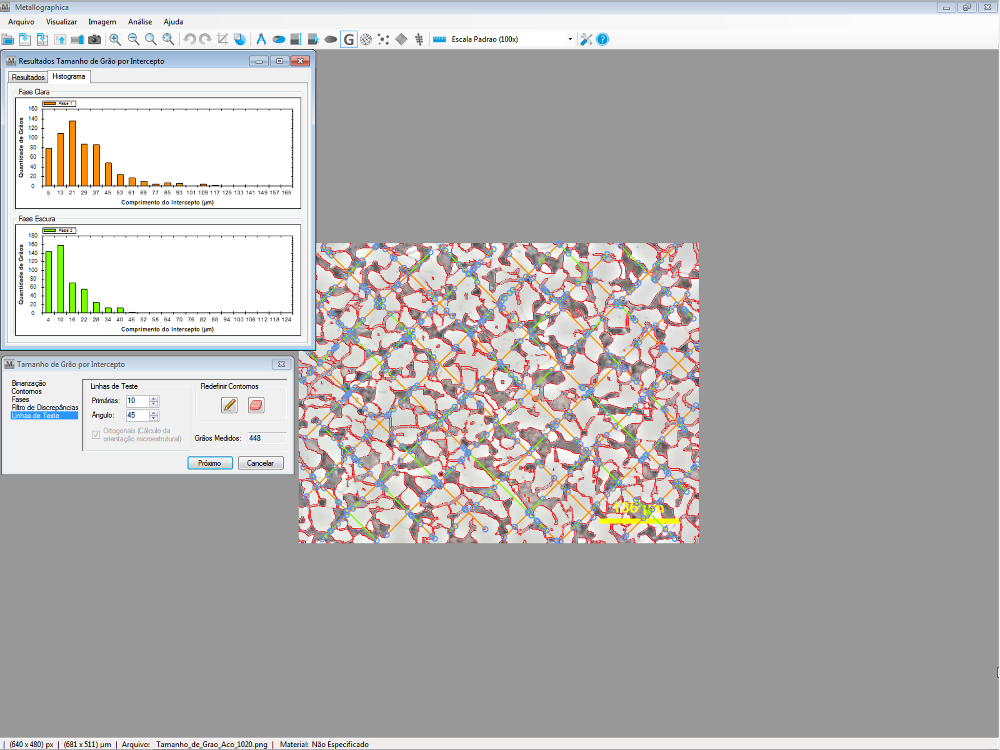
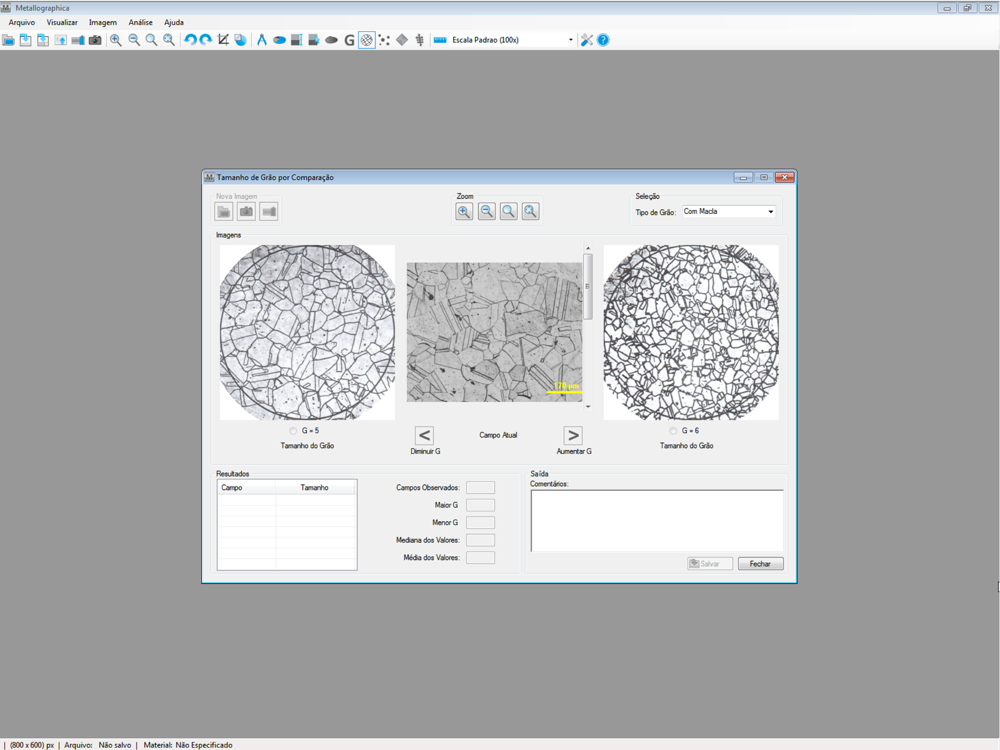
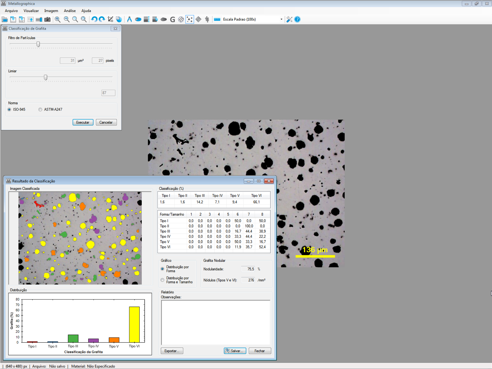
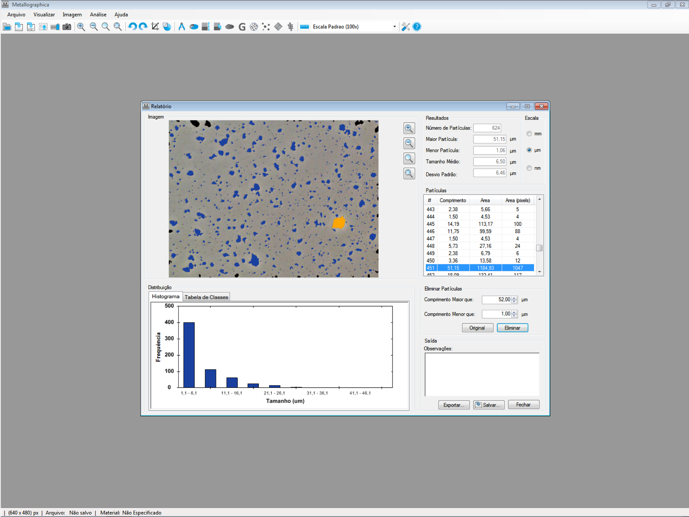
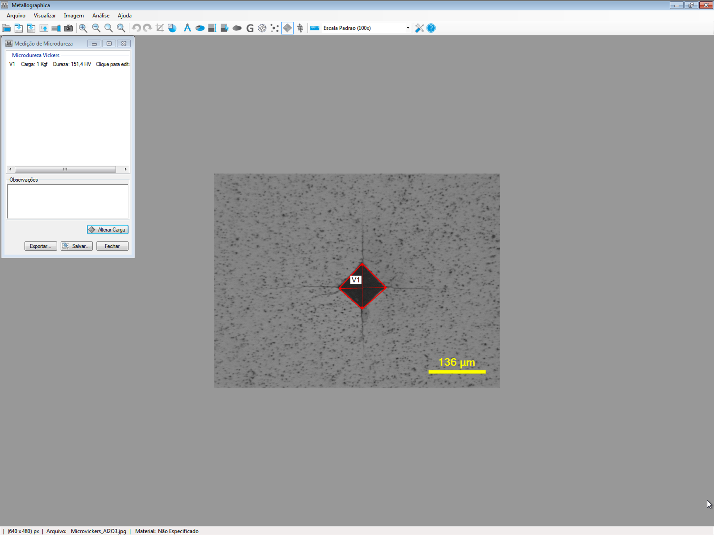
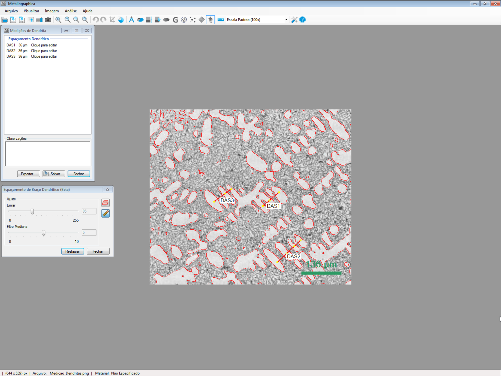

Medição
Ferramentas para medir comprimentos, áreas e ângulos diretamente nas imagens.
Funcionalidades
Conheça algumas das funcionalidades do Metallographica.

Ferramentas para medir comprimentos, áreas e ângulos diretamente nas imagens.

Determinação da fração de área de diferentes fases ou constituintes microestruturais.

Determinação do tamanho de grão por métodos metalográficos.

Comparação do tamanho de grão com imagens de referência.

Classificação da grafita conforme normas ISO 945 e ASTM A247.

Análise e classificação de partículas com resultados e estatísticas.

Medição de microdureza Vickers em amostras de materiais.

Medição do espaçamento de braços dendríticos primários e secundários (DAS).